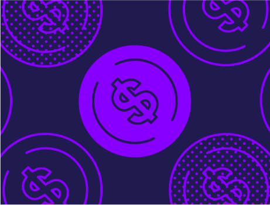
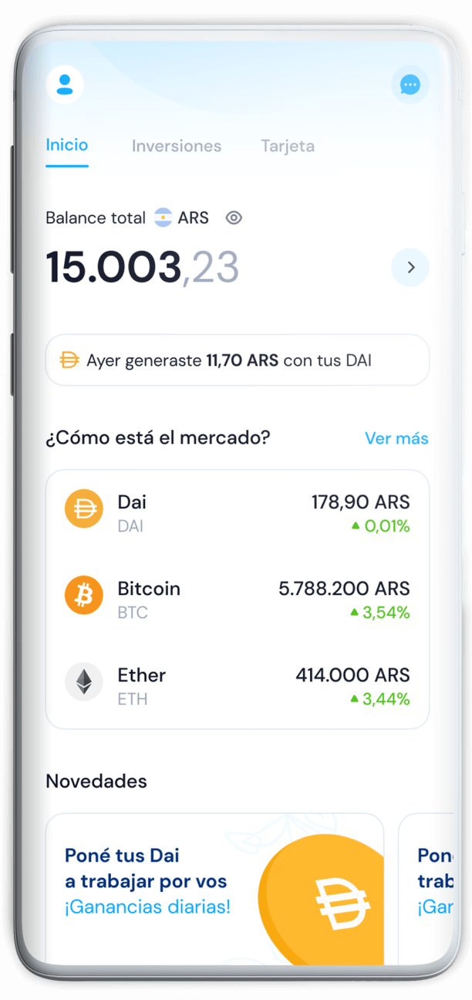

COMO COMPRAR CRIPTOMONEDAS FACIL
Cambia tus pesos por BTC, ETH, UDT y mas
COMO COMPRAR CRIPTOMONEDAS EN CHOCRYPTO
Te explicamos como comprar facil y rapido

¿Que es Bitcoin?
Qué es Bitcoin y para qué sirve. Cuáles son sus características. Qué es una criptomoneda y cuáles son sus ventajas. Cómo podés conseguir tus primeros bitcoins. Mas información

¿Que es Ethereum?
Te contamos los usos y fundamentos de Ethereum, una plataforma para smart contracts y aplicaciones descentralizadas que tiene su propio token, ether (ETH). Mas información


¿Que es USDT?
Stablecoins: todo lo que tenés que saber sobre los “criptodólares” Mas información